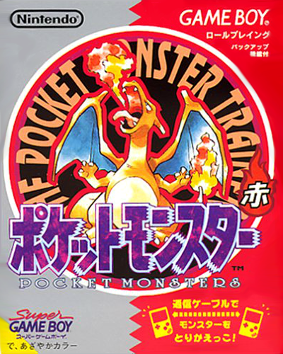

El punto de origen de Pokémon, sus videojuegos. Fueron la semilla de la saga en 1997 y hasta hoy siguen creando nuevas entregas que van desde los juegos lineales tradicionales hasta juegos secundarios. El primer juego de la saga se lanzó en 1997 (1999 en Europa) y no tuvo mucho éxito hasta que los jugadores comenzaron a notar fallos que los hacía toparse con un extraño Pokémon que nadie conocía, lo que incrementó drásticamente las ventas del juego.
